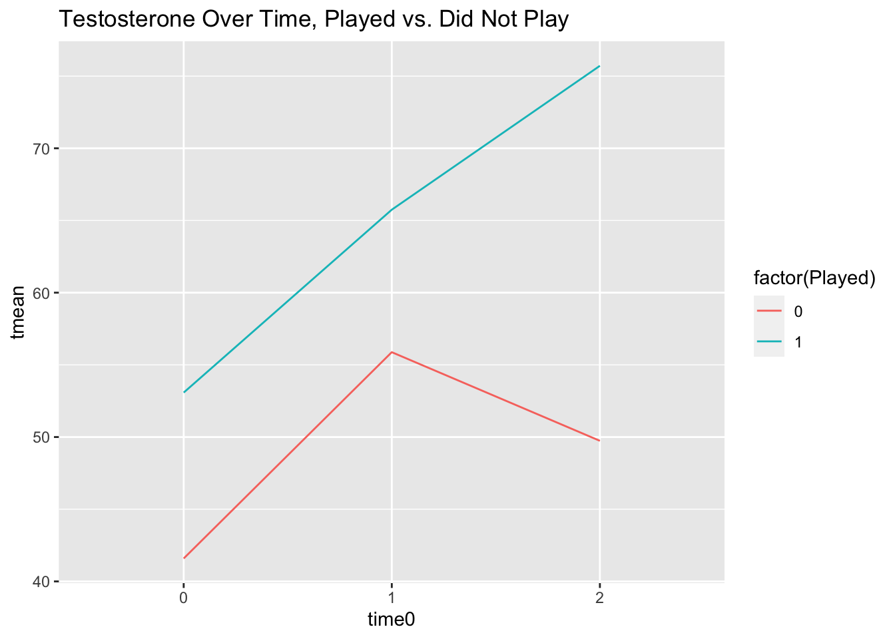

Chapter 10 Multilevel Modelling with Longitudinal Data
10.1 Learning Objectives
In Chapter 9, we discussed how to interpret multilevel models with repeated measures data without time in the model. In this chapter, we will review fitting MLMs for longitudinal data, i.e., repeated measures with time in the model.
The learning objectives for this chapter are:
- Recognize when data are longitudinal and in the correct format for multilevel modelling;
- Conduct multilevel modelling on longitudinal data;
- Interpret coefficients for longitudinal data;
- Review evidence to decide whether to retain effects.
All materials for this chapter are available for download here.
10.2 Data Demonstration
10.2.1 Load Dependencies
For this data demo, we will use the following packages:
library(dplyr) # for data manipulation
library(ggplot2) # for graphing
library(lme4) # for multilevel models
library(lmerTest) # for p-values
library(performance) # for ICC10.2.2 Multilevel Models for Longitudinal Data
When we use cross-sectional data, level-1 variables vary between individuals (e.g., age, gender, SES) while level-2 variables vary between clusters (e.g., whether schools are public or private, number of students in a classroom, school funding).
With repeated measures data without time in the model, level-1 variables vary between measurement occasions (e.g., experimental manipulations, stimulus volume or brightness) while level-2 variables vary between people (e.g., age, gender, SES).
In this chapter, we’re looking at longitudinal models, i.e., repeated measures with time in the model. With longitudinal data, level-1 variables vary over time (e.g., weight at time 1, time 2, time 3; Testosterone levels at 10 minutes into game, 20 minutes into game, 30 minutes into game). Level-1 variables are also called “time-varying covariates” because they vary with time. Level-2 variables are the same across time (also called “time invariant covariates”), for example age, gender, SES (assuming these things don’t change over the study period, if you wait long enough these will or may change).
10.2.2.1 Data Structures: Long vs Wide
As with repeated measures, you need your data in long format to conduct an MLM. Imagine you were measuring weight and caloric intake. If you have historically worked with repeated measures data in an ANOVA framework, you are probably used to working with data in a “wide” format, i.e., one row per participant with different variables for different measurement instances.
| id | weight1 | weight2 | calories1 | calories2 |
|---|---|---|---|---|
| 1 | 200 | 190 | 3500 | 3300 |
| 2 | 150 | 160 | 3200 | 3100 |
In MLMs, you need to use data in a “long” format where one row is one measurement occasion:
| id | weight | calories | measurement_occasion | |
|---|---|---|---|---|
| 1 | 200 | 3500 | 1 | |
| 1 | 190 | 3300 | 2 | |
| 2 | 150 | 3200 | 1 | |
| 2 | 160 | 3100 | 2 |
10.2.3 Visualizing Testosterone Levels Over Time
The data used in this chapter are a simplified version of the data from Casto, K.V., & Edwards, D.A. (2016). Before, during, and after: How phases of competition differentially affect testosterone, cortisol, and estradiol levels in women athletes. Adaptive Human Behavior and Physiology, 2, 11-25. https://doi.org/10.1007/s40750-015-0028-2.
Dr. Kathleen Casto gave us permission to use these data for teaching purposes (thanks Kathleen!); any other use requires additional permission. You can see more of her work here.
data <- read.csv('casto2016.csv')head(data)## Code position HormonCont Played minplayed game time Cortisol Testosterone Estradiol
## 1 1224 1 0 1 90 1 2 0.456 84.541 3.706
## 2 1224 1 0 1 90 1 3 0.575 118.942 5.631
## 3 1224 1 0 1 90 1 4 0.303 104.803 3.372
## 4 1348 2 0 1 90 1 2 0.649 39.547 2.620
## 5 1348 2 0 1 90 1 3 0.323 44.291 3.010
## 6 1348 2 0 1 90 1 4 0.879 62.774 3.650
## time0
## 1 0
## 2 1
## 3 2
## 4 0
## 5 1
## 6 2These data include hormone levels of female athletes in a competition setting (soccer game), if they played in the game or not (Played), what position they played (position), how long they played (minplayed), their testosterone levels (Testosterone), and if they were taking birth control (HormonCont). We will focus on testosterone, if they played, and if they were taking birth control for this example.
Let’s start by visualizing testosterone levels over time for the entire sample:
data %>%
group_by(time0) %>%
mutate(tmean = mean(Testosterone)) %>% # mean testosterone per timepoint
ggplot(mapping = aes(x = time0, y = tmean)) +
geom_line() +
labs(title = "Testosterone Over Time for Entire Sample")
The relationship between time and testosterone doesn’t look exactly linear. Let’s check if there are different relationships between people who played and people who didn’t.
data %>%
group_by(time0, Played) %>% # group by timepoint and played
mutate(tmean = mean(Testosterone)) %>%
ggplot(mapping = aes(x = time0, y = tmean, colour = factor(Played))) +
geom_line() +
labs(title = "Testosterone Over Time, Played vs. Did Not Play")
Those who played have a pretty linear increase in testosterone over time, while those who did not play go up from time 0 to 1 and then back down between 1 and 2, so it looks like playing or not might be an important level-2 predictor for our model intercepts and slopes.
Finally, let’s check whether birth control seems like an important predictor of intercepts and slopes:
data %>%
group_by(time0, HormonCont) %>% # group by timepoint and birth control
mutate(tmean = mean(Testosterone)) %>%
ggplot(mapping = aes(x = time0, y = tmean, colour = factor(HormonCont))) +
geom_line() +
labs(title = "Testosterone Over Time, Birth Control or Not")
Looks like another variable we might want to consider in our model! Let’s begin with our null model and incrementally build from there.
10.2.4 Random-Intercept-Only/Null Model
Let’s estimate our null model with FIML as our estimator and calculate the ICC. Why FIML? We’re going to be adding fixed effects (played, birth control) and comparing model fits.
| Level | Equation |
|---|---|
| Level 1 | \(testosterone_{ij} = \beta_{0j} + R_{ij}\) |
| Level 2 | \(\beta_{0j} = \gamma_{00} + U_{0j}\) |
| Combined | \(testosterone_{ij} = \gamma_{00} + U_{0j} + R_{ij}\) |
Here, we’re estimating three parameters:
- \(\gamma_{00}\): the fixed effect for the intercept, mean testosterone levels across all people;
- \(\tau_0^2\): a random effect for the intercept capturing the variance of people’s average testosterone levels around the intercept;
- \(\sigma^2\): a random effect capturing the variance of people around their own average testosterone level.
null_model <- lmer(Testosterone ~ 1 + (1|Code), data = data, REML = FALSE)
summary(null_model)## Linear mixed model fit by maximum likelihood . t-tests use Satterthwaite's method [
## lmerModLmerTest]
## Formula: Testosterone ~ 1 + (1 | Code)
## Data: data
##
## AIC BIC logLik deviance df.resid
## 634.5 641.4 -314.3 628.5 70
##
## Scaled residuals:
## Min 1Q Median 3Q Max
## -1.6055 -0.5563 -0.2220 0.4901 2.8619
##
## Random effects:
## Groups Name Variance Std.Dev.
## Code (Intercept) 252.9 15.90
## Residual 186.1 13.64
## Number of obs: 73, groups: Code, 25
##
## Fixed effects:
## Estimate Std. Error df t value Pr(>|t|)
## (Intercept) 59.643 3.569 24.876 16.71 0.00000000000000494 ***
## ---
## Signif. codes: 0 '***' 0.001 '**' 0.01 '*' 0.05 '.' 0.1 ' ' 1performance::icc(null_model)## # Intraclass Correlation Coefficient
##
## Adjusted ICC: 0.576
## Conditional ICC: 0.576With longitudinal data, as with repeated measures without time, the ICC is interpreted as the proportion of variance between people: How much of the variance stems from people being different from one another versus fluctuating within themselves? A large ICC means that most of the variability is between people, not from people varying in their testosterone levels. The ICC is 0.576, indicating that 57.6% of the variance in testosterone is attributed to a person.
10.2.5 Adding Level-1 Fixed and Random Effects
Let’s add our level-1 predictor, time0, to our model. Note that time0 is coded such that 0 is the first measurement occasion at the beginning of the game, 1 is mid-game, and 2 is at the end of the game.
| Level | Equation |
|---|---|
| Level 1 | \(testosterone_{ij} = \beta_{0j} + \beta_{1j}time0_{ij} + R_{ij}\) |
| Level 2 | \(\beta_{0j} = \gamma_{00} + U_{0j}\) |
| \(\beta_{1j} = \gamma_{10} + U_{1j}\) | |
| Combined | \(testosterone_{ij} = \gamma_{00} + \gamma_{10}time0_{ij} + U_{0j} + U_{1j}time0_{ij} + R_{ij}\) |
With this model, we’re estimating 6 parameters:
- \(\gamma_{00}\): the fixed effect for the intercept, mean testosterone levels at time 0 across all people;
- \(\gamma_{10}\): the fixed effect for time0, effect of time on testosterone levels;
- \(\tau_0^2\): a random effect for the intercept capturing the variance of people’s average testosterone levels around the intercept;
- \(\tau_1^2\): a random effect for the slope of time0 capturing the variance of people’s slopes around the grand mean slope;
- \(\sigma^2\): a random effect capturing the variance of people around their own average testosterone level.
- \(\tau_{01}\): the covariance between the random intercept and random slope. Do people who have higher values of testosterone at time0 have particularly lower or higher slopes?
Let’s run the model with FIML as our estimator:
l1_model <- lmer(Testosterone ~ 1 + time0 + (time0|Code), data = data, REML = FALSE)
summary(l1_model)## Linear mixed model fit by maximum likelihood . t-tests use Satterthwaite's method [
## lmerModLmerTest]
## Formula: Testosterone ~ 1 + time0 + (time0 | Code)
## Data: data
##
## AIC BIC logLik deviance df.resid
## 601.1 614.8 -294.5 589.1 67
##
## Scaled residuals:
## Min 1Q Median 3Q Max
## -1.65381 -0.55990 -0.07896 0.50762 2.39316
##
## Random effects:
## Groups Name Variance Std.Dev. Corr
## Code (Intercept) 154.67 12.437
## time0 24.12 4.911 0.87
## Residual 78.58 8.865
## Number of obs: 73, groups: Code, 25
##
## Fixed effects:
## Estimate Std. Error df t value Pr(>|t|)
## (Intercept) 50.665 2.971 25.027 17.054 0.00000000000000273 ***
## time0 9.092 1.625 24.030 5.595 0.00000925670408174 ***
## ---
## Signif. codes: 0 '***' 0.001 '**' 0.01 '*' 0.05 '.' 0.1 ' ' 1
##
## Correlation of Fixed Effects:
## (Intr)
## time0 0.114as.matrix(Matrix::bdiag(VarCorr(l1_model)))## (Intercept) time0
## (Intercept) 154.67317 53.07523
## time0 53.07523 24.11744Looking at our fixed effects, the intercept of 50.67 is the average testosterone level across people at time 0. The slope of 9.09 indicates the average increase in testosterone levels over one unit of time.
The variance term describing how people vary around the intercept is 154.67. The variance term describing how people’s slopes vary is 24.12. The covariance between the random intercept and random slope is 53.07 (correlation of 0.87), indicating that those with higher initial levels of testosterone also have higher slopes (more intense increase in testosterone over time).
10.2.6 Evidence for Retaining Effects
The fixed effect for time seems both statistically and practically significant. Variances are difficult to interpret in isolation, so we can consider a few sources of evidence when examining whether to keep the random effect for slope: deviance testing, 95% confidence interval, 95% plausible values range, and visualizing variance.
We can use the built-in anova() function to conduct our deviance test for the model with and without the slope covariance:
l1_model_no_U1j <- lmer(Testosterone ~ 1 + time0 + (1|Code), data = data, REML = FALSE)
anova(l1_model, l1_model_no_U1j)## Data: data
## Models:
## l1_model_no_U1j: Testosterone ~ 1 + time0 + (1 | Code)
## l1_model: Testosterone ~ 1 + time0 + (time0 | Code)
## npar AIC BIC logLik deviance Chisq Df Pr(>Chisq)
## l1_model_no_U1j 4 607.23 616.39 -299.61 599.23
## l1_model 6 601.09 614.83 -294.54 589.09 10.14 2 0.006281 **
## ---
## Signif. codes: 0 '***' 0.001 '**' 0.01 '*' 0.05 '.' 0.1 ' ' 1There is significantly less deviance in the model with the slope variance term.
Let’s look at 95% confidence intervals for all effects:
confint(l1_model, oldNames = F)## Computing profile confidence intervals ...## 2.5 % 97.5 %
## sd_(Intercept)|Code 8.08885766 18.508662
## cor_time0.(Intercept)|Code -0.02405199 1.000000
## sd_time0|Code 1.82944849 9.035275
## sigma 6.84599241 11.178406
## (Intercept) 44.60763264 56.714968
## time0 5.76797005 12.405566We’ve suppressed the warnings in this output for brevity, but if you run this code yourself you’ll see a lot of warnings! That’s likely because of the covariance term, given that the correlation cor_time0.(Intercept)|Code runs up against the upper bound of 1.00 within the confidence interval. Let’s remove that term.
l1_model_cov0 <- lmer(Testosterone ~ 1 + time0 + (1|Code) + (0 + time0|Code), data = data, REML = FALSE)
anova(l1_model, l1_model_cov0)## Data: data
## Models:
## l1_model_cov0: Testosterone ~ 1 + time0 + (1 | Code) + (0 + time0 | Code)
## l1_model: Testosterone ~ 1 + time0 + (time0 | Code)
## npar AIC BIC logLik deviance Chisq Df Pr(>Chisq)
## l1_model_cov0 5 602.67 614.12 -296.33 592.67
## l1_model 6 601.09 614.83 -294.54 589.09 3.5849 1 0.05831 .
## ---
## Signif. codes: 0 '***' 0.001 '**' 0.01 '*' 0.05 '.' 0.1 ' ' 1Our model fit is not significantly different after removing the covariance term, so let’s proceed without it and look at our confidence intervals again:
confint(l1_model_cov0, oldNames = F)## Computing profile confidence intervals ...## 2.5 % 97.5 %
## sd_(Intercept)|Code 10.123069 20.33901
## sd_time0|Code 2.941503 10.19590
## sigma 6.549504 10.66364
## (Intercept) 44.090984 57.21964
## time0 5.589114 12.80020The confidence interval for our slope variance, sd_time0|Code, does not contain 0, so it is significant.
Finally, one way to visualize variability is with a graph: what are the different slope values across people? This is the same as our Empirical Bayes plotting exercise in Chapter 4.
# Extract Empirical Bayes estimates and graph them
as_tibble(coef(l1_model)$Code) %>%
ggplot(mapping = aes(x = time0)) +
geom_histogram(bins = 5)
To summarize our evidence: the model with the random slope effect fits better, the random effect confidence interval does not contain zero (i.e., it is significant), and we can see that slopes for time vary, many people’s slopes around 5 or 10 but some as high as ~20. All signs point to keeping the random effect.
10.2.7 Adding Level-2 Fixed Effects
Let’s start adding the level-2 effects we graphed at the beginning: playing and birth control. First, let’s add whether someone played or not.
| Level | Equation |
|---|---|
| Level 1 | \(testosterone_{ij} = \beta_{0j} + \beta_{1j}time0_{ij} + R_{ij}\) |
| Level 2 | \(\beta_{0j} = \gamma_{00} + \gamma_{01}played_j + U_{0j}\) |
| \(\beta_{1j} = \gamma_{10} + \gamma_{11}played_j + U_{1j}\) | |
| Combined | \(testosterone_{ij} = \gamma_{00} + \gamma_{01}*played_j + \gamma_{10}time0_{ij} + \gamma_{11}time0_{ij}*played_j + U_{0j} + U_{1j}time0_{ij} + R_{ij}\) |
With this model, we’re estimating 7 parameters:
- \(\gamma_{00}\): the fixed effect for the intercept, mean testosterone levels at time 0 across those who did not play (
played= 0); - \(\gamma_{10}\): the fixed effect for time0, effect of time on testosterone levels controlling for playing;
- \(\gamma_{01}\): the fixed effect for playing, effect of playing on testosterone at time0;
- \(\gamma_{11}\): interaction term between playing and time, the effect of playing on the effect of time on testosterone levels;
- \(\tau_0^2\): a random effect for the intercept capturing the variance of people’s average testosterone levels around the intercept controlling for time and playing;
- \(\tau_1^2\): a random effect for the slope of time0 capturing the variance of people’s slopes around the grand mean slope controlling for playing;
- \(\sigma^2\): a random effect capturing the variance of people around their own average testosterone level, controlling for time and playing;
We are not estimating a covariance term.
l2_played <- lmer(Testosterone ~ 1 + time0 + Played + Played:time0 + (1|Code) + (0 + time0|Code), data = data, REML = FALSE)
summary(l2_played)## Linear mixed model fit by maximum likelihood . t-tests use Satterthwaite's method [
## lmerModLmerTest]
## Formula: Testosterone ~ 1 + time0 + Played + Played:time0 + (1 | Code) +
## (0 + time0 | Code)
## Data: data
##
## AIC BIC logLik deviance df.resid
## 599.1 615.1 -292.5 585.1 66
##
## Scaled residuals:
## Min 1Q Median 3Q Max
## -1.5068 -0.5964 -0.1015 0.3243 2.4437
##
## Random effects:
## Groups Name Variance Std.Dev.
## Code (Intercept) 182.24 13.500
## Code.1 time0 27.22 5.217
## Residual 67.89 8.239
## Number of obs: 73, groups: Code, 25
##
## Fixed effects:
## Estimate Std. Error df t value Pr(>|t|)
## (Intercept) 44.526 5.479 26.886 8.126 0.0000000103 ***
## time0 3.929 2.942 25.406 1.335 0.1936
## Played 9.004 6.638 26.811 1.356 0.1863
## time0:Played 7.389 3.500 25.476 2.111 0.0448 *
## ---
## Signif. codes: 0 '***' 0.001 '**' 0.01 '*' 0.05 '.' 0.1 ' ' 1
##
## Correlation of Fixed Effects:
## (Intr) time0 Played
## time0 -0.265
## Played -0.825 0.218
## time0:Playd 0.222 -0.840 -0.270Looking at our fixed effects, the intercept of 44.53 is the average testosterone level at time 0 across people who didn’t play. The slope of time, 3.93, indicates the average increase in testosterone levels over one unit of time controlling for playing. The slope of having played, 9.00, indicates that those who played had on average 9 more units of Testosterone than those who didn’t at time 0. The interaction between time and having played indicates that those who played had a 7.39-higher slope on average than those who didn’t.
The variance term describing how people vary around the intercept is 182.24. The variance term describing how people’s time slopes vary is 27.22.
Let’s do a quick deviance test to see if including playing decreases deviance (i.e., improves model fit):
anova(l1_model_cov0, l2_played)## Data: data
## Models:
## l1_model_cov0: Testosterone ~ 1 + time0 + (1 | Code) + (0 + time0 | Code)
## l2_played: Testosterone ~ 1 + time0 + Played + Played:time0 + (1 | Code) + (0 + time0 | Code)
## npar AIC BIC logLik deviance Chisq Df Pr(>Chisq)
## l1_model_cov0 5 602.67 614.12 -296.33 592.67
## l2_played 7 599.09 615.12 -292.54 585.09 7.583 2 0.02256 *
## ---
## Signif. codes: 0 '***' 0.001 '**' 0.01 '*' 0.05 '.' 0.1 ' ' 1The model with played does fit significantly better.
Finally, let’s add a fixed effect for birth control.
| Level | Equation |
|---|---|
| Level 1 | \(testosterone_{ij} = \beta_{0j} + \beta_{1j}time0_{ij} + R_{ij}\) |
| Level 2 | \(\beta_{0j} = \gamma_{00} + \gamma_{01}played_j + \gamma_{02}birth\_control_j + U_{0j}\) |
| \(\beta_{1j} = \gamma_{10} + \gamma_{11}played_j + \gamma_{12}birth\_control_j + U_{1j}\) | |
| Combined | \(testosterone_{ij} = \gamma_{00} + \gamma_{01}*played_j + \gamma_{02}*birth\_control_j + \gamma_{10}time0_{ij} + \gamma_{11}time0_{ij}*played_j + \gamma_{12}time0_{ij}*birth\_control_j + U_{0j} + U_{1j}time0_{ij} + R_{ij}\) |
Here, we’re estimating 9 effects, the 7 previously described plus:
- \(\gamma_{02}\): the fixed effect for birth control, effect of taking birth control on baseline testosterone levels controlling for playing;
- \(\gamma_{12}\): interaction term between playing and birth control.
l2_played_birthcontrol <- lmer(Testosterone ~ 1 + time0 + Played + time0:Played + HormonCont + time0:HormonCont + (1|Code) + (0 + time0|Code), data = data, REML = FALSE)
summary(l2_played_birthcontrol)## Linear mixed model fit by maximum likelihood . t-tests use Satterthwaite's method [
## lmerModLmerTest]
## Formula: Testosterone ~ 1 + time0 + Played + time0:Played + HormonCont +
## time0:HormonCont + (1 | Code) + (0 + time0 | Code)
## Data: data
##
## AIC BIC logLik deviance df.resid
## 600.4 621.0 -291.2 582.4 64
##
## Scaled residuals:
## Min 1Q Median 3Q Max
## -1.5413 -0.5573 -0.1349 0.3886 2.4161
##
## Random effects:
## Groups Name Variance Std.Dev.
## Code (Intercept) 159.27 12.620
## Code.1 time0 27.99 5.291
## Residual 67.37 8.208
## Number of obs: 73, groups: Code, 25
##
## Fixed effects:
## Estimate Std. Error df t value Pr(>|t|)
## (Intercept) 50.5745 6.4512 26.8271 7.840 0.0000000207 ***
## time0 4.0889 3.5168 25.6439 1.163 0.2557
## Played 9.2374 6.3078 26.9286 1.464 0.1547
## HormonCont -9.7086 6.1205 26.8019 -1.586 0.1244
## time0:Played 7.4842 3.5225 25.5433 2.125 0.0435 *
## time0:HormonCont -0.3946 3.3160 25.6701 -0.119 0.9062
## ---
## Signif. codes: 0 '***' 0.001 '**' 0.01 '*' 0.05 '.' 0.1 ' ' 1
##
## Correlation of Fixed Effects:
## (Intr) time0 Played HrmnCn tm0:Pl
## time0 -0.287
## Played -0.652 0.187
## HormonCont -0.591 0.169 -0.024
## time0:Playd 0.183 -0.668 -0.280 0.007
## tm0:HrmnCnt 0.171 -0.543 0.007 -0.289 -0.067Matrix::bdiag(VarCorr(l2_played_birthcontrol))## 2 x 2 sparse Matrix of class "dgCMatrix"
##
## [1,] 159.2723 .
## [2,] . 27.99435anova(l2_played, l2_played_birthcontrol)## Data: data
## Models:
## l2_played: Testosterone ~ 1 + time0 + Played + Played:time0 + (1 | Code) + (0 + time0 | Code)
## l2_played_birthcontrol: Testosterone ~ 1 + time0 + Played + time0:Played + HormonCont + time0:HormonCont + (1 | Code) + (0 + time0 | Code)
## npar AIC BIC logLik deviance Chisq Df Pr(>Chisq)
## l2_played 7 599.09 615.12 -292.54 585.09
## l2_played_birthcontrol 9 600.36 620.97 -291.18 582.36 2.7264 2 0.2558Taking birth control is associated with a drop in Testosterone by 9.71 units, controlling for all other variables, and the interaction between time and birth control was -0.39, indicating that the slope for time is 4.09 - 0.39 = 3.70 for people taking birth control. Neither effect was statistically significant.
10.3 Conclusion
In this chapter, we estimated and interpreted models for longitudinal data and reviewed some of the evidence available to us in making model construction decisions: deviance testing, 95% confidence intervals, and visualizing Empirical Bayes estimates. In Chapter 11, we will review another source of evidence for model-building and interpretation: effect sizes and R-squared in multilevel models.